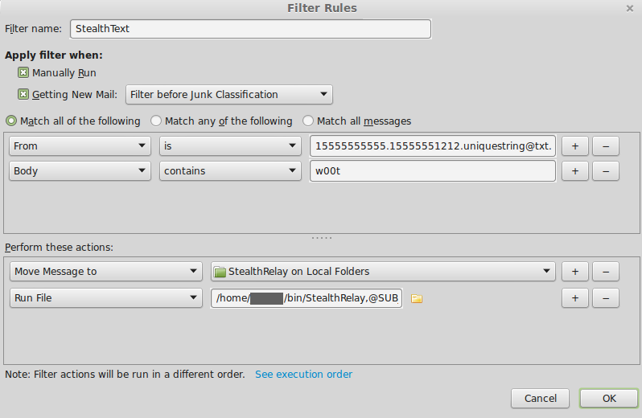

StealthRelay is a simple message relay that extracts an encrypted StealthText transaction from a local, designated mailbox. It then dispatches the encrypted transaction to the StealthCoin wallet where it is decrypted and broadcast to the StealthCoin Tor network.
These instructions demonstrate how to set up a completely automated StealthText pipeline with a google voice number, the Thunderbird email program enabled with FiltaQuilla, and StealthRelay. All of these tools and services are completely free.
Can I use a different SMS forwarding service from google voice or a different email program from Thunderbird?
Not at the moment. The email must be in a specific format created by gmail and saved in a specific format used by Thunderbird. In the future, we may support other popular services and clients upon request.
What if I already have an email program.
Thunderbird can run alongside other email programs. You may want to create a unique gmail account just for your StealthText pipeline.
Why does making a StealthText pipleine require so many steps?
All modern communication requires pipelines that themselves took many steps to create. StealthText is a brand new service, so no pipelines are presently in place. The situation is different for other services like email and www. These services have been around for decades and their pipelines are completely established, with little effort required from end users in most cases. Of course, I remember days in the 1990s when it would take half a day and a call to the IT department to set up a POP email client! Welcome to the cutting edge of anonymous transactions.
Download StealthRelay at https://github.com/StealthSend/StealthRelay/Builds/.
In Windows, drag the StealthRelay program folder to your chosen location. In Linux, save the executable in ~/bin, /usr/local/bin, or similar. In OS X (not available yet), open the disk image file drag the StealthRelay program to the Applications folder of your hard drive.
Important
Note where you put the StealthRelay program.
For people in the US, complete instructions for creating a google voice number are here: http://voipsetup.info/how-to-register-for-a-google-voice-number/#more-9
To use StealthRelay, you need to adjust your “StealthCoin.conf” file. You need to configure a couple of settings, modified for your set up. Be sure to choose a stealthsecret of at least 20 random characters. You do not need to memorize this secret. Choose a stealthpin that you can memorize but is hard to guess. A stealthpin may be a string of any characters and as long as you can memorize (you may have characters other than numbers). The stealthsecret will be entered into the settings of the StealthText Android application. You need to set server=1 and daemon=1 as well as rpcuser and rpcpassword.
The following is an example “StealthCoin.conf” file that can be used with StealthText:
rpcpassword=32JFGpNLpKwQ8nWDz353L4iDwesnTt3OgOoG81wo
rpcuser=xstrpc
server=1
daemon=1
stealthsecret=XAI81pM0H81OGaeCQuXmXA7nP
stealthpin=506$Saturn$effect$wife$dance$867
Warning
Don’t use the above password, secret, or pin! They are just examples. You may generate a memorable and strong stealthpin at https://www.xkpasswd.net/c/index.cgi
You will not only want to have the StealthCoin Qt (or daemon) running, but you will also want to have the daemon available to accept the RPC (remote procedure calls) on behalf of the wallet. The daemon does not need to be running if the Qt is already running, but it gets launched by the relay every time an email comes in. Links to daemons for Linux, Windows, and Mac (not yet available) are on the bitcointalk forum OP (https://bitcointalk.org/index.php?topic=681725.0), and on the StealthCoin website (https://stealth-coin.com/). Remember the place where you download the daemon as you will add that daemon to an email filter in the instructions below. Make sure you get the right daemon for your OS.
You will need an email client that can (1) filter certain messages to a designated mailbox and (2) launch a specific program upon receipt of certain messages. The Thunderbird <https://www.mozilla.org/en-US/Thunderbird/> email program is free and can do both, if enabled with the FiltaQuilla addon.
After downloading and installing Thunderbird, navigate to the menu selection File -> New -> Existing Mail Account, to set up your gmail account. Then, navigate to the menu selection Tools -> Add-ons and install the FiltaQuilla addon. In the preferences for the FiltaQuilla addon, ensure that the option “Run File” is selected, under the “Filter Actions” tab of the preference pane.
In Thunderbird, create a folder in “Local Folders” called “StealthRelay”.
Use your mobile device to send your google voice number an SMS message. Then, go to you gmail inbox and find the email message corresponding to this SMS message. Note the “From:” address, which will look something like the following:
15555555555.15555551212.uniquestring@txt.voice.google.com
This address should be used as the “confirm_address” in the StealthRelay configuration file, as described below.
In Thunderbird, create a filter by navigating to the menu item “Tools -> Message Filters”. The filter will be for the gmail account linked to your google voice number. Call the filter “StealthText”. Select “Match all of the following”. Add a “From”/”is” conditional for the @txt.voice.google.com email above. Then, to the same filter, add a “Body”/”contains” conditional for a client ID. For this example, the client ID will be “w00t”.
Perform two actions with the filter. First “Move Message to” the “StealthRelay on Local Folders”. Second “Run File” for the StealthRelay program.
This filter will now run StealthRelay any time an email arrives from your mobile device and has the client identifier in it (w00t). When you fill your preferences in the StealthText Android application, ensure to enter the client ID exactly as it is in this filter.
Once installed, it is necessary to configure StealthRelay. In your home folder, edit a plain text file called ”.stealthrelay” (note the leading period). It should have the following contents, edited as appropriate:
daemon = /Users/username/bin/StealthCoind
sender = yourgoogleaccount@gmail.com
username = yourgoogleaccount
password = googlepassword
server = smtp.gmail.com:587
confirm_address = 15555555555.15555551212.uniquestring@txt.voice.google.com
success = May the force be with you.
fail = I am your father.
The settings in ”.stealthrelay” specify how the StealthRelay program behaves.
Another option, called mail allows you to specify the location of the Thunderbird profile folder in case this folder is in a non-standard location:
mail = /Path/To/Thunderbird/Profiles
Be sure to save the ”.stealthrelay” file or change its settings such that you are the only person who can read it. It is best to have a special gmail account just for StealthText transactions because the config file requires you to enter the gmail password as plain text.
The confirm_address can be found in the “From:” section of an email created by sending an SMS message from your mobile device to your google voice number.
StealthRelay will reply with a short message that indicates success or failure of the transaction. You can choose any messages you like for this purpose. After StealthRelay submits a transaction to the wallet, it will attempt to send an email to the confirm_address with the appropriate message. This address will direct the contents of the email back to the device that sent the StealthText transaction.
If you have followed these instructions, you now have Thunderbird configured to save new StealthText messages from a specific mobile device into the local folder called “StealthRelay”. Thunderbird will then run “StealthRelay”, which finds the new email, extracts the encrypted transaction, and sends it to your StealthCoin wallet. StealthRelay will await a confirmation from the wallet, and send a message indicating success or failure of the transaction.